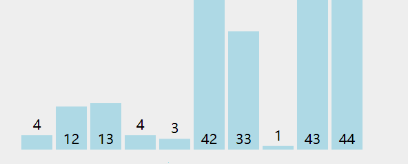

排序（sorting）是将一组数据，按特定规则调换位置，使得数据具有某种顺序关系。
1. 冒泡排序
冒泡排序（Bubble Sort）又称为交换排序法，每一次从当前最大的元素移动到列表的最右端，保证最右端的元素始终最大。冒泡排序法的时间复杂度为O(n^2)，这种排序算法适用于数据量小或有部分数据已经排序过，排序过程中为相邻两者互相比较和对调，并不会改变其原本排列的顺序，所以是稳定排序法。

code:
1 | def bubbleSort(arr): |
2. 选择排序
选择排序（Selection sort）是一种简单直观的排序算法。它的工作原理是每一次从待排序的数据元素中选出最小（或最大）的一个元素，存放在序列的起始位置。

code:
1 | def select_sort(arr): |
3. 插入排序
插入排序（Insertion-Sort）的算法描述是一种简单直观的排序算法。它的工作原理是通过构建有序序列，对于未排序数据，在已排序序列中从后向前扫描，找到相应位置并插入。

code:
1 | def insertionSort(arr): |
4. 希尔排序
希尔排序（Shell Sort）是简单插入排序的改进版。它与插入排序的不同之处在于，它会优先比较距离较远的元素。希尔排序又叫缩小增量排序。